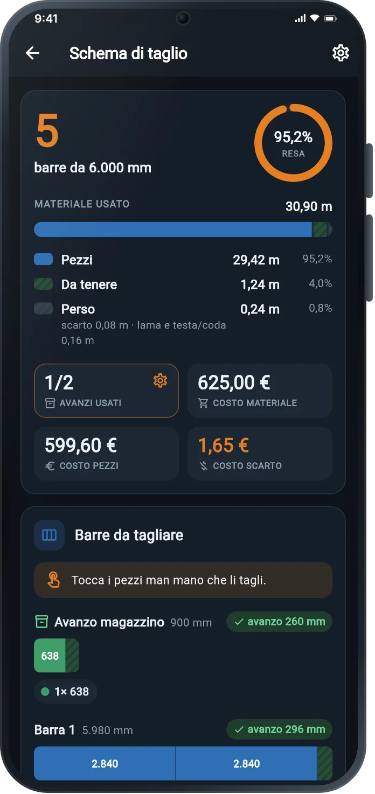

Sai quanto usi e quanto spendi
In cima allo schema trovi quante barre comprare, la resa e la barra del materiale usato. Con il prezzo, anche i costi.
- Pezzi, avanzi da tenere e materiale perso: le tre parti sommano tutto il materiale
- Costo del materiale, dei pezzi e dello scarto
- Prezzo a barra o al metro, si cambia con un tocco
